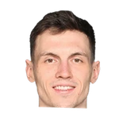

Anthony Puccio:Sean Marks on Rodions Kurucs:
“I told him we’re here to support him... We’re here for you, your family.”

3 quotes about Rodions Kurucs from 2 players, coaches and executives, newest first. Each one links to its original source.
Anthony Puccio:Sean Marks on Rodions Kurucs:
“I told him we’re here to support him... We’re here for you, your family.”
Michael Scotto:Nets coach Kenny Atkinson on Rodions Kurucs as a possibility for the Rising Stars Game:
“He should. I’m partial. The guy’s starting on a team that’s above .500 and fighting for a playoff spot. That’s pretty big stuff, and contributing, having big games and playing big minutes.”
Brian Lewis:Atkinson on taking Kurucs out of the lineup when Allen Crabbe returns:
“He’s making it hard. That’s not going to be an easy decision. We'll look at it hard... I like that defensive versatility & that size. He keeps playing like this it’s going to be tough to take him out.”